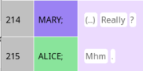
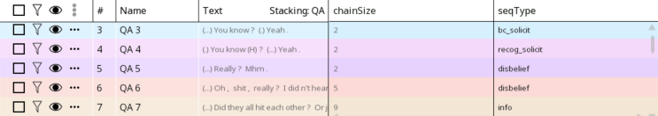
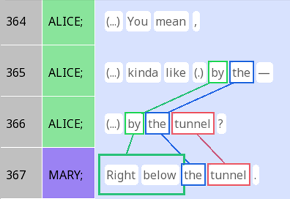
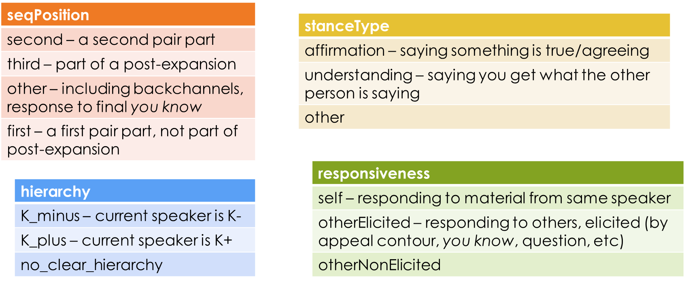
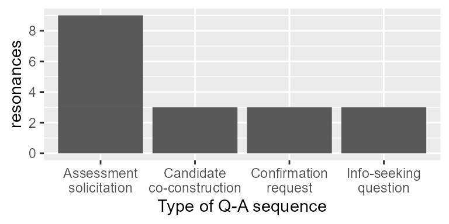
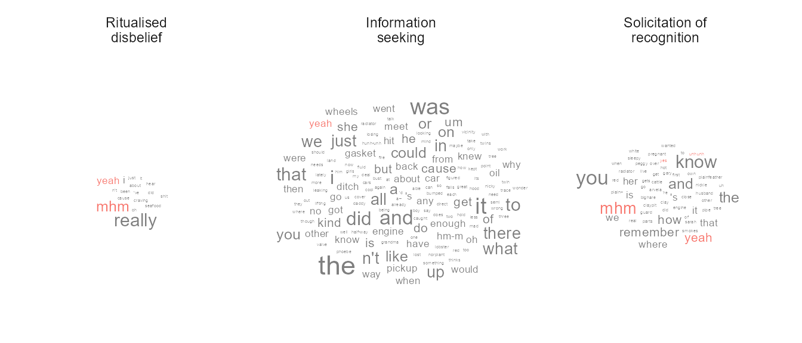
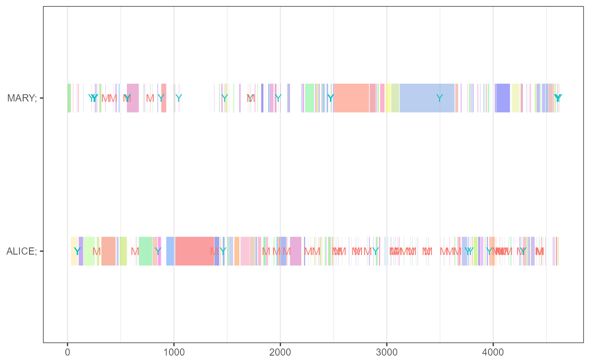
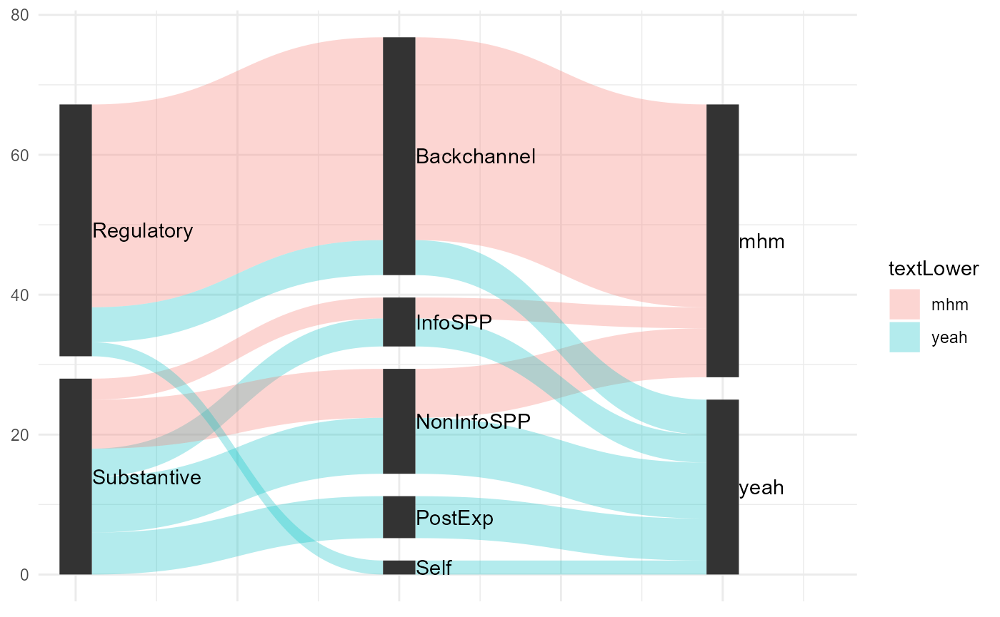

Tutorial for SEMDIAL
semdial_tutorial.RmdThis tutorial accompanies the SEMDIAL poster abstract on
rezonateR by showing how everything was coded.
## Warning: package 'tidyverse' was built under R version 4.2.2## ── Attaching packages ─────────────────────────────────────── tidyverse 1.3.2 ──
## ✔ ggplot2 3.4.2 ✔ purrr 1.0.1
## ✔ tibble 3.2.1 ✔ dplyr 1.1.2
## ✔ tidyr 1.3.0 ✔ stringr 1.5.0
## ✔ readr 2.1.2 ✔ forcats 0.5.2## Warning: package 'ggplot2' was built under R version 4.2.3## Warning: package 'tibble' was built under R version 4.2.3## Warning: package 'tidyr' was built under R version 4.2.3## Warning: package 'purrr' was built under R version 4.2.3## Warning: package 'dplyr' was built under R version 4.2.3## Warning: package 'stringr' was built under R version 4.2.3## ── Conflicts ────────────────────────────────────────── tidyverse_conflicts() ──
## ✖ dplyr::filter() masks stats::filter()
## ✖ dplyr::lag() masks stats::lag()## Loading required package: rlang## Warning: package 'rlang' was built under R version 4.2.3##
## Attaching package: 'rlang'
##
## The following objects are masked from 'package:purrr':
##
## %@%, flatten, flatten_chr, flatten_dbl, flatten_int, flatten_lgl,
## flatten_raw, invoke, splice
##
##
## Attaching package: 'rezonateR'
##
## The following object is masked from 'package:ggplot2':
##
## %+%## Import starting - please be patient ...
## Creating node maps ...
## Creating rezrDFs ...
## Adding foreign fields to rezrDFs and sorting (this is the slowest step) ...
## >Adding to unit entry DF ...
## >Adding to unit DF ...
## >Adding to chunk DF ...
## >Adding to stack DFs ...
## >Adding to rez DFs ...
## >Adding to track DFs ...
## Splitting rezrDFs into layers ...
## A few finishing touches ...
## Done!The dataset
Several annotations have been made in the dataset we used for this study. Firstly, all question-answer sequences in the text have been marked as stacks. This includes anything that is formally marked by lexico-grammatical means as a question, including through formulaic expressions like you know? and really?. When the speaker is K- and makes a statement that is clearly a question, that is included as well; I exclude, however, cases where a K+ speaker produces a grammatical declarative with rising intonation, since those seem to have lower expectations for a response.
Here is an example of how a question and an answer may be marked as a stack:

The seqType variable that gives the specific type of
question. This particular stack is tagged as a ritualised expression of
surprise; the annotation is shown below along with a few others:

Resonance was marked throughout the text, including within question-answer pairs:

Finally, each instance of the words yeah and mhm is manually annotated for some features in Rezonator:

Adding participant information
Let’s first add participant (speaker label) information to the cards DF:
sbc007_qa = sbc007_qa %>%
addFieldForeign("token", "", "unit", "", "unit", "participant", "participant")
sbc007_qa = sbc007_qa %>%
addFieldForeign("card", "QA", "unit", "", "unit", "participant", "participant")We can now determine whether each Q&A has Mary or Alice as the asker like this:
sbc007_qa_asker_byseq = sbc007_qa$cardDF$QA %>%
group_by(chain) %>%
summarise(asker = participant[which(actionType == "question")[1]]) %>%
ungroupNow let’s put this info in the stack DF again:
sbc007_qa$stackDF$QA = sbc007_qa$stackDF$QA %>%
rez_left_join(sbc007_qa_asker_byseq,
by = c(id = "chain"),
fieldaccess = "flex")Adding resonance information
Find number of resonances between questions and answers:
getResonacesBetweenQA = function(actionType, unit){
findResonancesBetween(sbc007_qa, list(unit[actionType == "question"]), list(unit[actionType == "answer"]))
}
sbc007_qa = addUnitSeq(sbc007_qa, "rez", "default")
sbc007_countrez_qa = sbc007_qa$cardDF$QA %>%
group_by(chain) %>%
summarise(resonances = getResonacesBetweenQA(actionType, unit)) %>%
ungroup()Now let’s put this info in the stack DF again:
sbc007_qa$stackDF$QA = sbc007_qa$stackDF$QA %>%
rez_left_join(sbc007_countrez_qa,
by = c(id = "chain"),
fieldaccess = "flex")Now we can look at resonances by question type:
sbc007_qa$stackDF$QA %>%
filter(resonances > 0) %>%
ggplot(aes(y = resonances, x = seqType)) +
geom_col() +
scale_x_discrete(labels = c("Assessment\nsolicitation", "Candidate\nco-construction", "Confirmation\nrequest", "Info-seeking\nquestion"),
name = "Type of Q-A sequence") +
scale_y_continuous(breaks = seq(0,8,2))
Word cloud
We will first do a few preparatory steps:
library(ggwordcloud)
#Add QA stack sequence numbers to token DF
sbc007_qa = stackToToken(sbc007_qa, "QA")
#Add seqType to the token DF as well
sbc007_qa = addFieldForeign(sbc007_qa,
"token", "", "stack", "QA",
"QASeq", "seqType",
sourceKeyName = "stackSeq")
#Determine which tokens are actual words, as opposeed to e.g. punctuation
sbc007_qa = sbc007_qa %>% addIsWordField(kind == "word")Now we can look at the word clouds, highlighting interjections:
#Get the commonest part of speech of a word in the text
getCommonest = function(char){
summ = as.factor(char) %>% summary
names(summ[summ == max(summ)][1])
}
sbc007_qa$tokenDF %>%
filter(!is.na(seqType), kind == "word") %>%
mutate(seqType = as.factor(seqType),
textLower = as.factor(tolower(text))) %>%
group_by(seqType, textLower) %>%
summarise(POS_dft = getCommonest(POS_dft), n = n()) %>%
mutate(POS_dft = case_when(textLower %in% c("yeah", "yes", "mhm", "right", "unhunh") ~ "ITJ")) %>%
ungroup() %>%
filter(seqType %in% c("info","disbelief", "recog_solicit")) %>%
ggplot(aes(label = textLower, size = n, col = POS_dft)) +
geom_text_wordcloud() +
theme_minimal() +
theme(legend.position = "top") +
scale_x_continuous(expand = c(0,0)) +
facet_wrap("seqType", labeller = as_labeller(c(disbelief = "Ritualised\ndisbelief", info = "Information\nseeking",
recog_solicit = "Solicitation of\nrecognition")))
Gantt chart
This produces the Gantt chart shown in the abstract:
#Getting participant information in stacks:
sbc007_qa = sbc007_qa %>% addFieldForeign("card", "Turn", "unit", "", "unit", "participant", "participant")
sbc007_qa = sbc007_qa %>% addFieldForeign("stack", "Turn", "card", "Turn", "card", "participant", "participant", type = "complex", complexAction = function(x) paste0(unique(x), collapse = ","))
getGantt(sbc007_qa, x = "token", obj = "stack", stacking = "Turn")+ theme(axis.title = element_blank()) +
geom_point(data = sbc007_qa$tokenDF %>%
filter(tolower(text) %in% c("yeah", "mhm")) %>%
mutate(docTokenSeqLast = docTokenSeq,
docTokenSeqFirst = docTokenSeq),
aes(y = participant, x = docTokenSeq,
col = tolower(text),
shape = tolower(text)),
size = 3) + theme(legend.position = "none") +
scale_shape_manual(breaks = c("mhm", "yeah"),
values = c("M", "Y"))
Clustering
This code derives the non-manually-created features for the yeah/mhm dataset:
#Get lowercase words
sbc007_qa$tokenDF <- sbc007_qa$tokenDF %>% rez_mutate(textLower = tolower(text))
#Get unit and turn lengths in the token DF
sbc007_qa$tokenDF =
sbc007_qa$tokenDF %>%
rez_group_by(unit) %>%
rez_mutate(unitLen = sum(isWord)) %>%
rez_ungroup()
sbc007_qa = stackToToken(sbc007_qa, "Turn")
sbc007_qa$tokenDF =
sbc007_qa$tokenDF %>%
rez_group_by(TurnSeq) %>%
rez_mutate(TurnLen = sum(isWord)) %>%
rez_ungroup()
#Get positions of IUs within turns, words within IUs (counting from the front (order) and counting from the back (back))
sbc007_qa$tokenDF =
sbc007_qa$tokenDF %>%
rez_mutate(TurnOrder = getOrderFromSeq(TurnSeq, isWord = isWord))
sbc007_qa$tokenDF = sbc007_qa$tokenDF %>%
rez_mutate(unitBack = case_when(
isWord ~ unitLen - wordOrder + 1,
T ~ 0))
sbc007_qa$unitDF <- sbc007_qa$unitDF %>%
rez_mutate(TurnOrder = getOrderFromSeq(TurnSeq)) %>%
rez_group_by(TurnSeq) %>%
rez_mutate(TurnLen = max(TurnOrder)) %>%
rez_ungroup() %>%
rez_mutate(TurnBack = TurnLen - TurnOrder + 1)## Warning in setRezrDFAttr(df, "fieldaccess", fields, value): The data.frame does
## not have the same field as the value vector that you are giving me. Please check
## that the value vector is correct, or specifiy the fields you want to set. Data
## frame column only: unitStart.1, unitEnd.1; value vector names only: .## Warning in setRezrDFAttr(df, "inNodeMap", fields, value): The data.frame does
## not have the same field as the value vector that you are giving me. Please check
## that the value vector is correct, or specifiy the fields you want to set. Data
## frame column only: unitStart.1, unitEnd.1; value vector names only: .## Warning in setRezrDFAttr(df, "fieldaccess", fields, value): The data.frame does
## not have the same field as the value vector that you are giving me. Please check
## that the value vector is correct, or specifiy the fields you want to set. Data
## frame column only: unitStart.1, unitEnd.1; value vector names only: .## Warning in setRezrDFAttr(df, "inNodeMap", fields, value): The data.frame does
## not have the same field as the value vector that you are giving me. Please check
## that the value vector is correct, or specifiy the fields you want to set. Data
## frame column only: unitStart.1, unitEnd.1; value vector names only: .
#Getting the positions of units within turns to the token DF:
sbc007_qa = sbc007_qa %>%
addFieldForeign("token", "", "unit", "",
"unitSeq", "unitTurnOrder", "TurnOrder",
sourceKeyName = "unitSeq") %>%
addFieldForeign("token", "", "unit", "",
"unitSeq", "unitTurnLen", "TurnLen",
sourceKeyName = "unitSeq") %>%
addFieldForeign("token", "", "unit", "",
"unitSeq", "unitTurnBack", "TurnBack",
sourceKeyName = "unitSeq")Get vector forms of properties:
yeah_mhm_sbc007 = sbc007_qa$tokenDF %>% filter(textLower %in% c("yeah", "mhm"))
yeah_mhm_sbc007_vector =
data.frame(
hierarchy = case_when(
yeah_mhm_sbc007$hierarchy == "K_plus" ~ 1,
yeah_mhm_sbc007$hierarchy == "K_minus" ~ 0,
T ~ .5
),
responsiveness = case_when(
yeah_mhm_sbc007$responsiveness == "otherElicited" ~ 1,
yeah_mhm_sbc007$responsiveness == "self" ~ 0,
T ~ .5
),
seqPosition_second = .5 * (yeah_mhm_sbc007$seqPosition == "second"),
seqPosition_third = .5 * (yeah_mhm_sbc007$seqPosition == "third"),
seqPosition_other = .5 * (yeah_mhm_sbc007$seqPosition == "other"),
stanceType_second = .5 * (yeah_mhm_sbc007$stanceType == "affiliation"),
stanceType_third = .5 * (yeah_mhm_sbc007$stanceType == "understanding"),
stanceType_other = .5 * (yeah_mhm_sbc007$stanceType == "other"),
wordOrder = yeah_mhm_sbc007$wordOrder / max(yeah_mhm_sbc007$wordOrder),
back = as.integer(yeah_mhm_sbc007$back) / max(as.integer(yeah_mhm_sbc007$back)),
unitTurnOrder = log(yeah_mhm_sbc007$unitTurnOrder) / max(log(yeah_mhm_sbc007$unitTurnOrder)),
unitTurnBack = log(yeah_mhm_sbc007$unitTurnBack) / max(log(yeah_mhm_sbc007$unitTurnBack))
)
yeah_mhm_sbc007 = yeah_mhm_sbc007 %>% group_by(textLower) %>% mutate(idNew = paste0(textLower, "_", 1:n())) %>% ungroup
rownames(yeah_mhm_sbc007_vector) = yeah_mhm_sbc007 %>% pull(idNew)Do hierarchical clustering and cut tree:
distMatrix = dist(yeah_mhm_sbc007_vector, method = "manhattan")
yeah_mhm_clusters = hclust(distMatrix)
yeah_mhm_sbc007 = yeah_mhm_sbc007 %>%
mutate(clusters_5 = cutree(yeah_mhm_clusters, k = 5)) %>%
mutate(clusters_2 = cutree(yeah_mhm_clusters, k = 2)) %>%
mutate(category_fine = case_when(
clusters_5 == 1 ~ "Self",
clusters_5 == 2 ~ "Backchannel",
clusters_5 == 3 ~ "NonInfoSPP",
clusters_5 == 4 ~ "PostExp",
clusters_5 == 5 ~ "InfoSPP"
) %>%
factor(levels = c("Backchannel", "Self", "NonInfoSPP", "PostExp", "InfoSPP"))) %>%
mutate(category_coarse = case_when(
clusters_2 == 1 ~ "Regulatory",
clusters_2 == 2 ~ "Substantive"
)) %>%
mutate(path = paste0(category_coarse, "-", category_fine),
base = 1)Draw Sankey diagram:
## Warning: package 'ggforce' was built under R version 4.2.3
yeah_mhm_all_ggforce = yeah_mhm_sbc007 %>%
group_by(category_coarse, category_fine, textLower) %>%
summarise(value = n()) %>%
ungroup %>%
gather_set_data(1:3, id_name = "id")## `summarise()` has grouped output by 'category_coarse', 'category_fine'. You can
## override using the `.groups` argument.
ggplot(yeah_mhm_all_ggforce, aes(x, id = id, split = y, value = value)) +
geom_parallel_sets(aes(fill = textLower), alpha = 0.3, axis.width = 0.1) +
geom_parallel_sets_axes(axis.width = 0.1) +
geom_parallel_sets_labels(colour = 'black', angle = 0, nudge_x = 0.05, hjust = 0) +
coord_cartesian(xlim = c(1, 3.3)) +
theme_minimal() +
theme(axis.title.x = element_blank(),
axis.text.x = element_blank())